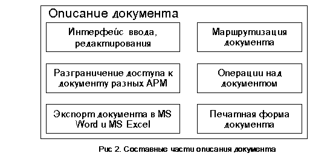

Базовые классы обьектов системы
Основным объектом платформы AS-3.X является документ. Документ - это запрос на модификацию данных в системе, несущий в себе необходимую для этого информацию и требующий маршрутизации и последовательной обработки. Выполнение операций в системе сопровождается реализацией тех или иных технологических цепочек. И именно документ является связующим звеном, обеспечивающим единую технологическую цепочку работы любой организации. Он характеризуется набором состояний и операциями перехода между этими состояниями.
Тип документа определяет его жизненный цикл. В соответствии с типом документа задается последовательность изменений состояний и алгоритмы "срабатывающие" при их изменении. Документ является основанием для порождения бухгалтерских записей.
Система поддерживает связь "документ-бухгалтерская запись" и обратно. Имеется возможность регенерации печатных "оригиналов" документов из их электронного вида (Рис. 2).
Платформа AS-3.X реализована по принципу "Операция - Документ - Бухгалтерская запись". Для выполнения любого движения финансовых средств необходим документ, инициирующий данное движение.
На первом этапе происходит регистрация документа в системе и выполнение операций над ним как над объектом системы. Регистрация документа может и не порождать изменение финасового состояния. Последующая же его обработка обеспечивает возможность порождения не только бухгалтерских проводок, но и одного или нескольких документов.
Обработка документов реализована в реальном масштабе времени, что позволяет получить любую отчетную и аналитическую информацию на текущий момент.

Основные требования, которым отвечает система документооборота платформы AS-3.X являются:
Для хранения все документы системы собраны в объектах папки или деревья документов. Объект дерево отличается от объекта папка и позволяет иерархически группировать документы. Один и тот же документ может находиться в нескольких папках или деревьях, причем с различным статусом: как оригинал, как копия, для подтверждения (визирования) или для повторного ввода. Например, если в какой-то папке находится документ со статусом "копия", то данный документ можно только просмотреть. В одной и той же папке или дереве могут находиться совершенно разные по типу документы.
Для удобной и быстрой работы с папками в систему введены описания объектов источники данных и их представления. Источники данных определяют кирпичики информации из базы данных, описывают набор колонок и операции, совершаемые над папками. На их основании с помощью представлений можно спроецировать на экране данные в виде таблицы, с многочисленным набором таких установок, как селекция, сортировка, доступы на добавление, редактирование и удаление документов. На основе одного источника данных можно построить несколько представлений. Это позволяет разным пользователям иметь различный вид одной и той же папки. Например, некоторым пользователям нельзя знать имени депозитного вкладчика, это достигается описанием представления, где колонка имени будет отсутствовать.
Объект пользователь служит для описания справочной информации по каждому пользователю, а также позволяет назначить им права на использование информационных ресурсов в соответствии с их ролевыми функциями.
Автоматизированные рабочие места (АРМ-ы) в сущности являются этими ролевыми функциями. Каждый АРМ с помощью мощного дизайнера "дерева-навигации" строит собственное меню работы с системой. Каждому пользователю привязываются один или несколько АРМ-ов или, как было сказано выше, ролей. Ведь в данной организации один и тот же человек может совмещать несколько должностей (ролей).
В системе AS-3.X введено понятие описания учета. Что это такое? Абстрагируясь, можно сказать, что наряду с производственно-хозяйственной деятельностью, организации могут вести учет чего-угодно, например, учет производственных затрат, учет ТМЦ, учет валютной позиции, учет договоров, учет синтетических счетов, учет аналитических счетов, учет заработной платы, учет основных средств. Описывая учет, можно на любом этапе прохождения документа регистрировать факты (или выражаясь бухгалтерской терминологией, оформлять проводки) имеющие отношение к данному учету, и в дальнейшем, получать отчеты и справки по состоянию, как учета в целом, так и любого объекта этого учета.
С помощью объекта отчет, в системе разрешается описание собственного, произвольного отчета. В описании можно использовать простые, но в тоже время мощные функции ядра AS-3.X.
См.также